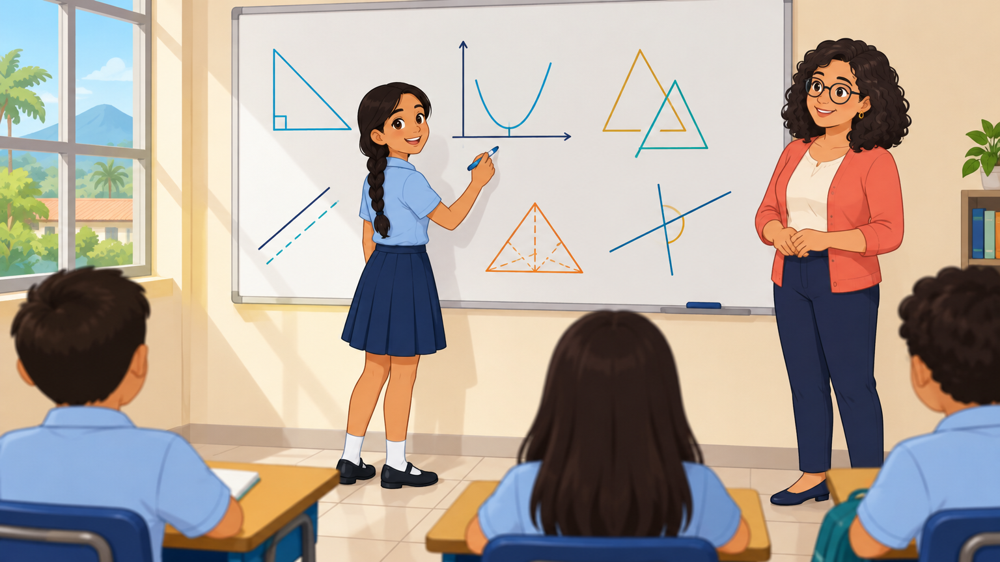

1
0:00 – 0:12
Sofía en la pizarra

- Imagen y acción
- Aula de sétimo, mañana. Sofía (13) resuelve un problema en la pizarra. La docente de matemáticas, que es también su docente guía, sonríe.
- Voz en off
- Gaby: Sofía tiene trece años, llegó de Nicaragua con su madre y es la mejor de su clase en matemáticas.
- Texto en pantalla
- Sin texto.